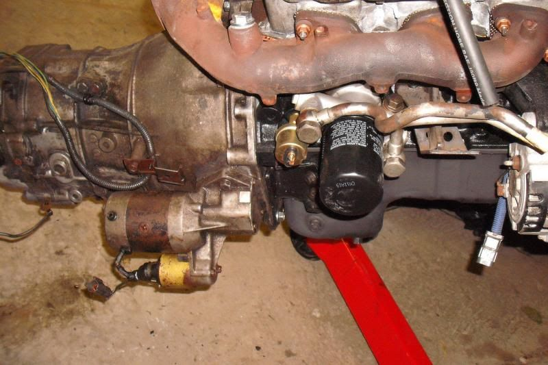

-
Figured I would start a new thread with what I did and what info I have to share on how to do this swap.
First thing to remember is I already had a FS5R30A transmission in my car since it's a Shiro.
Since the two transmissions are very similar I just pulled the bellhousing off of my busted up 30a and swapped onto the new Z32 unit. The bellhousing swap was straight forward, no modifications needed. Using my bellhousing I am able to retain my Z31 DXD clutch, Fidanza flywheel and stock starter.
Before putting the transmission in the car, I decided to bolt on the new shifter bracket. I bought the shortened bracket designed for 240SX to use a Z32 tranny from Xcessive Manufacturing. The install of their shorter shift lever can be a bit of a pain. The Z32 tranny uses a dog bone shaped linkage that is connected with a small U-joint. If you aren't careful you get to do what I did and repack all the little needle bearings. That is not fun! Anyway, after you get the dog bone off you attach the Xcessive shift linkage. It is very easy to install. It just bolts right on.
http://www.xcessivemanufacturing.com…step=4&pid=111
While we are talking about shifters I bought the Z1 Premium short throw shifter from Z1 Motorsports. This thing is nice. Feels great too, it is a bit pricey but any Z32 short throw should work. I did have to drill out the metal bushing in the center of the shifter for it to accommodate the through bolt from the Xcessive bracket. I can't say you will or will not run into this also. Nothing that 5 minutes on a drill press won't fix.
http://www.zspeedperformance.com/300…fter-Z1STS.htm
I also installed the ASCO poly transmission mount. This was very straight forward. Only issue I ran into is where the nuts go on the topside of the tranny case to hold the bolts. The Z31 transmission is open right there the Z32 tranny has "ribs" I just used smaller head diameter nuts to solve that. Otherwise it was a direct bolt on to the Z32 housing.
Another issue I came across, while minor was a bit of a pain. The Z32 has two different speed sensors. One for an NA car the other for TT. The NA cars have a 4.08 rear gear and TT's have a 3.7. I happened to have a NA with a 20 tooth red speedo gear but my car has a 3.7 differential. I bought a 18 tooth TT gear to swap on. It swaps on just fine, but I discovered shortly after install that the reason Nissan has two speed sensors is the offset of the gear is different! Well I discovered that rotating the speed sensor 180* solves the issue. However you will have to make a bracket. I used some aluminum plate I had laying around. Its not super pretty but it does the job. Also the speed sensor connector is different from the Z31 and the wiring is about 4ft shorter. So I just cut the harness off my old 30a speed sensor and soldered it on. Matching wires don't matter, both wires on the Z32 unit are the same. Just solder on and plug in. Speedo is working flawlessly now.
At this point it was time to put the new tranny into the car. Keep in mind the shifter WAS NOT installed. It installed just like the tranny that came out. The tranny mount and cross member lined right up everything slid right in. Threw in the bellhousing bolts, starter, slave cylinder and cross member. Now I was ready to take my drive shaft measurement. I spoke with Dave at Shaftmasters. He advised me to measure from tranny seal to diff flange. I also needed to let him know what size the diff flange is.
Turns out there are two kinds on the Z31, I had the larger square type. Yours may be that or the smaller rectangular type on the older Z31 so make sure you keep an eye on that. My measurement for the new drive shaft was 35" exactly from seal to flange. Your measurement may be different based on bellhousing you use. It will definitely be different if you have 2+2. If you have a 30a bellhousing on a 87+ 2 seater you will probably be ok with my measurements but absolutely always double check!
While I was waiting on the drive shaft to be made and delivered I installed the shifter. It's incredibly simple. 2 bolts is it. If you can't do that without help you shouldn't be doing this swap lol.
When the drive shaft came, it slid right in and bolted up perfectly. I reinstalled my exhaust, I have the CM 3in turbo back. If you do too, I highly recommend removing it all before doing this swap. There is no room with it on. After the shaft and exhaust were back on I filled the tranny with Redline MT-90. It took just over 2.5 quarts.
The tranny is great, feels awesome. The new shifter setup is taking some getting used to but the throw is short and precise. Ultimately though, with as fragmented as information on this swap was I hope this helps the entire community. It wasn't near as bad as I expected it to be.
RS5R30A with a FS5R30A bellhousing and stock Z31 crossmember
Shifter location with Xcessive shortened bracket
Speed Sensor with my bracket to rotate it 180* for use with TT blue speedo gear
New drive shaft with the MT-90
-
This swap can be done with the Z32 bellhousing if you don't have the 30A part to use. All measurements are the same.Cha iro
enjoy building it yourself.
if it fails, fuck it.
at least you gave it a whirl. -
However if you use the Z32 bell you need the Maxima flywheel, clutch and M30 starter combo, correct? -
Originally posted by ozzyrulez View Post
I'm using a Maxima starter…Z32 will work as well.Cha iro
enjoy building it yourself.
if it fails, fuck it.
at least you gave it a whirl. -
you have pm about the trans -
Good write up. Short and sweet. Is the only advantage of switching to the Z32 transmission availability? Because it will cost at least $800 to do what you did instead of locating a used Z31 30a. Price of shorter shifter bracket,short throw shifter,custom drive shaft,and z32 tranny is at leat $800 .Just wondering …not busting your chops.Shiro #443

-
Yeah the main reason I did it was finding a z31 30a and for a reasonable price. I picked up the z32 unit for 300 bucks. I figured pay a little more now and if I need another later it'll be easier to find and cheaper. -
I did exactly everything mentioned on this thread.
I have the same shorten solid shift bracket.
Rotated the speed sensor as shown.
And I have a aluminum driveshaft for it.
Very solid setup. I love the way it shifts. Feels more like a car than a truck (pathy/xterra/frontier, etc).
Good stuff! -
I agree the shifter feel is much nicer on these. -
Won't you need to make it longer now that you're going short nose R200?Originally posted by amreboot View PostCha iro
enjoy building it yourself.
if it fails, fuck it.
at least you gave it a whirl. -
Yeah, haha.Originally posted by Augustus Maximus View Post
Just supporting his posts! -
So the speedo have to be analog? With the digidash would be harder to make the speedo work? -
Now, if someone made better internals for the Z32 trans without going to straight cut gears etc…Gone - 1988 Shiro
2004 BMW 330Ci
2005 BMW 330i
1991 Twin Turbo Z's (Red and Black)
http://www.E46Turbo330Ci.com -
PPG has helical, as well as a couple others.Damn dirty angels....these cars!
Current Daily Driver - 86 Turbo.
Under the cover - THE BANANA… that needs to be re-energized.
sigpic -
What's wrong with the stock internals? Haven't there been several documented 500hp and 600hp Z32s on the stock transmission?Originally posted by NIVO View PostPrius… because Pretentious wouldn't fit across the back of the car…
Cheap, Fast, Reliable - pick any two
My 1986 Turbo Build

Copyright © 2006–. All rights reserved. Privacy Policy